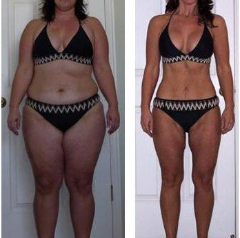
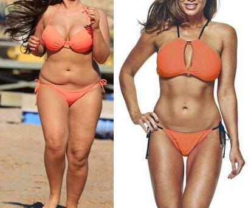
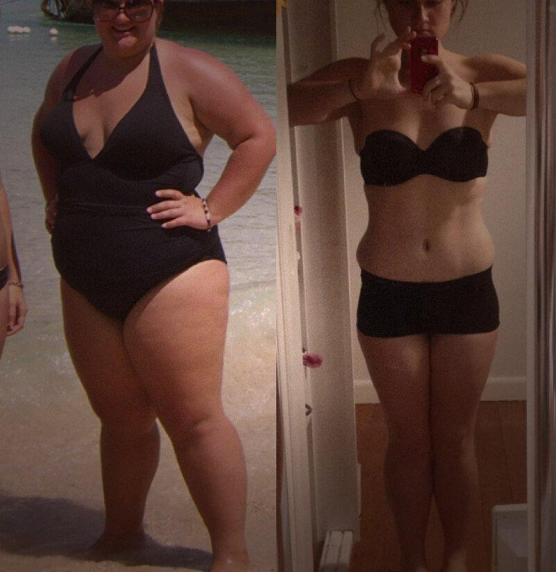
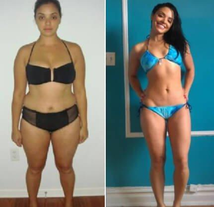
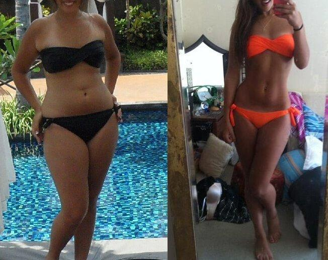
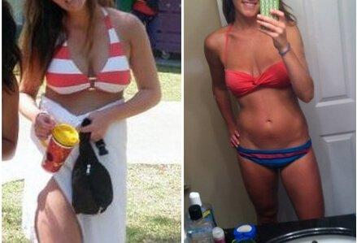
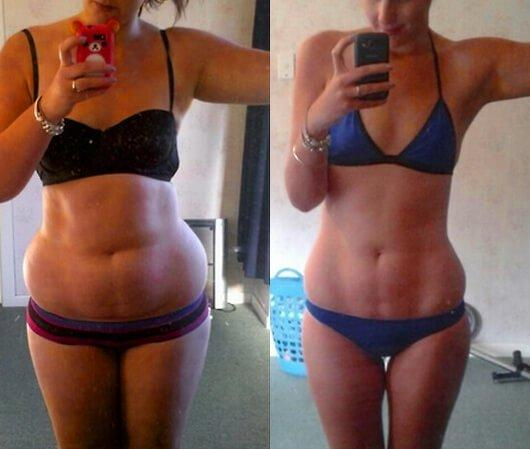

Е.Маринова: Здравейте, приятели!
Днес темата ни ще
отведе там, докъдето може да стигне борбата със
затлъстяването.
Е.Маринова: Наскоро, в предаването с диетолога професор Петко Петков обсъждахме новия продукт за отслабване . За съжаление, много дами от малкия екран са пренебрегнали съветите ни и са злоупотребили, което е довело до негативни последствия за тях - последствия, които ще разгледаме днес.
Е.Маринова: Както сигурно сте се досетили, ще говорим как да се избегне провокирането на анорексия, дължаща се на приема на хранителна добавка . И с този въпрос днес ще ни помогне докторът на медицинските науки, диетологът Димитър Шентов.
Д.Шентов: Честа причина за анорексия са диетите, на които се подлагат момичетата в стремежа си да отслабнат. Но се оказва, че това не е единствената причина.
Е.Маринова: Какво друго може да стане причината за тази страшна диагноза?
Д.Шентов: Както вече знаете, няколко месеца след като коментирахме , започнахме да получаваме жалби от жени, които са отслабнали до крайна степен и сега се чудят как да помогнат на изтощеното си тяло.
Д.Шентов: Работата е там, че е най-мощният естествен изгорител на мазнини, който съществува в момента.
И основната причина, някои жени да се доведат до това състояние, наречено анорексия е, че те
успоредно с приемането на са решили да се подложат допълнително на диета, за да подсилят
ефекта. И точно това се е случило.
В крайна сметка, жените, тежащи по 100-120 кг, буквално за 90 дни се превръщат в 30-килограмови
анорексички!
Е.Маринова: Много тъжно, че жените са злоупотребили с такова ефективно средство и са навредили самите на себе си. Но бих искала да ми кажете още нещо: каква е причината да се постига такъв поразителен ефект?
Д.Шентов: Много добър въпрос. И аз искам да обърна специално внимание
на това.
Този мигновен ефект се дължи на съчетанието на изцяло природни съставки, които отдавна са
доказали своята ефективност в света на диетологията.
Този продукт представлява натурална високо-концентрирана хранителна добавка, която съдържа изцяло натурални активни екстракт от листата на Йерба мате, екстракт от неузрели плодове от горчив портокал. е произведен по Българската технология и е одобрен от службата БАБХ.
активира процеса на деленето на мастните клетки, ускорява метаболизма, намалява апетита и намалява глада за сладко, като същевременно подобрява храносмилането, пречиства от токсините, премахва излишните течности и блокира повторното натрупване на мастни отлагания. По този начин може да се отслабва без диети и физическо натоварване.
Е.Маринова: Наистина свойствата на този продукт са просто поразителни.
Д.Шентов: Както видяхме, по време на приема на не е необходимо да се подлагате на диети, защото мазнините ще се стопят и без това. Тялото се нуждае от полезните хранителни вещества, които си набява от храната.
Другата причина е, че когато теглото се стапя толкова лесно и много момичета са, извинявам се за израза, като отвързани. На тях винаги им се струва, че свалените килограми са малко, защото те толкова силно се стремят към отслабване, че не знаят къде да спрат. За съжаление, се осъзнават прекалено късно.
Наталия страда от анорексия. Тя не е усетила как е свалила 20 кг. Тя твърди, че е отслабнала за 45 дни!
Е.Маринова: Д-р Шентов, напълно съм съгласна с Вас, а напоследък с този проблем се сблъскват все повече жени. И все пак, какво бихте препоръчали на нашите зрителки, за да се предпазят?
Д.Шентов: Може би най-ефективният метод, в този случай, би бил простата сметка: решавате от самото начало какво тегло искате да постигнете, да кажем, че тежите 80 кг, а искате да станете 55 кг. За да постигнете тази цел, имате нужда от 6-седмичен курс с , но не повече. Приемате продукта по схемата, колкото е необходимо, храните се правилно и достатъчно и, когато килограмите Ви стигнат 55 - преустановявате приема на добавката. Така ще постигнете Вашата цел и няма да стигате до крайности. В това ще Ви помогне експертът които ще ви проконсултира правилно и ще ви подбире курса.
Д.Шентов: Можете и трябва да се храните както обикновено - разнообразно и в достатъчни количества, така че да не изпитвате глад или дискомфорт. С ще отслабнете при всяко положение, диетите в случая са излишни.
Е.Маринова: До нас също достигна информацията, че на пазара са се появили и фалшификати, д-р Шентов, препоръчайте на зрителите откъде и как да се снабдят с истинския , а не с долнокачествена имитация.
Д.Шентов: е сертифициран продукт и, тъй като не се предлага засега в аптечната мрежа, най-сигурният начин да бъде закупен е чрез поръчка чрез официалния доставчик. Това е гаранция за качеството и единственен вид застраховка против имитации.
Е.Маринова: В заключение, бих искала да пожелая на всички да
бъдат здрави и не забравяйте, че благодарение на
съвременната медицина, много въпроси намират
решение много по-просто и лесно. е ярък
пример за това.
За тези, които искат да
отслабнат, нека не забравят двата основни
принципа: Първо - за да отслабнете, не е нужно
непременно
да гладувате! Второ - за да отслабнете, имате
нужда от !
Бъдете здрави!
Коментари: (47/47)






